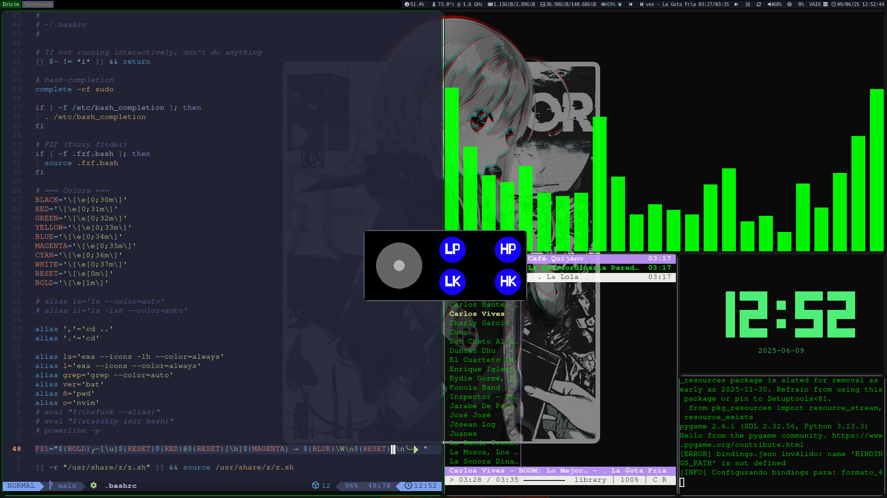
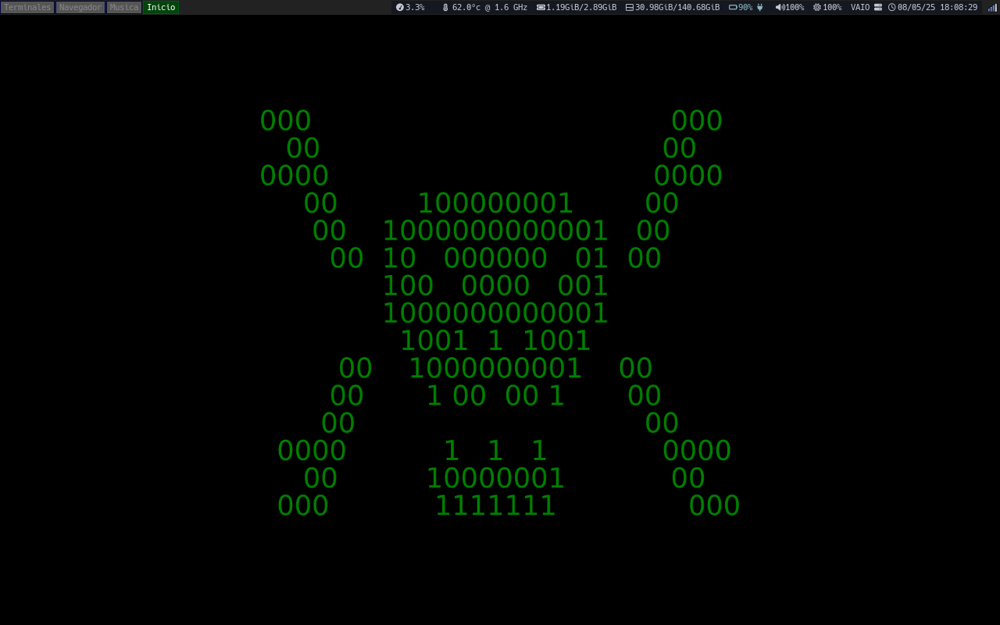
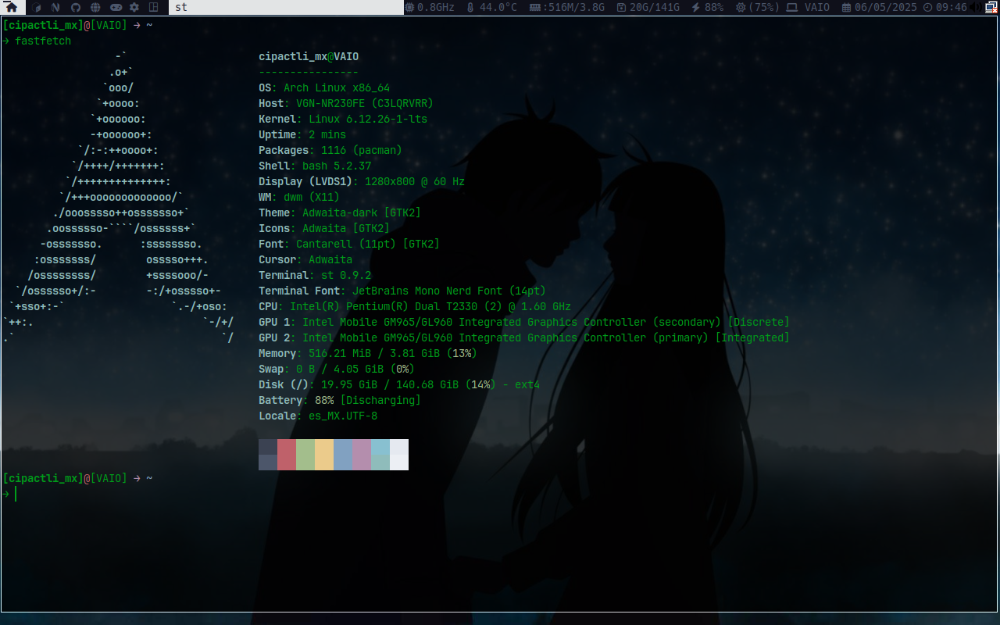
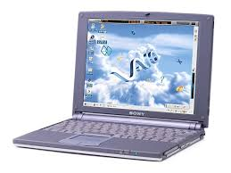
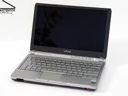
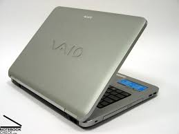

¡Hola! soy Cat-Not-Furry… ¡Bienvenido a mi Blog!
Eata pagina fue creada para contar la historia de un modelo de laptops fabricados por allá del 2000. El 24/07/2024 un amigo mío llamado MayorTom4815 me habló de Arch Linux; con anterioridad ya había entrado en contacto con el mundo de GNU/Linux, así que le di una oportunidad a Arch, ya que la instalación es ligera a comparación de la mayoría de distros y… lo admito, me pareció una distro que me daría «status» dentro de la comunidad (era tonto en ese entonces).

Captura de un segundo monitor con i3-wm
Se pueden apreciar 5 terminales y una ventana. La de la izquierda muestra
mi .bashrc; la ubicada arriba a la derecha es
cava (visualizador de audio basado en consola con soporte para múltiples backends); abajo a la izquierda,
cmus reproduciendo música; a la derecha en la parte superior,
tty-clock para más placer; debajo, una terminal ejecutando un
hud overlay
(al parecer pkg_resources tendrá soporte hasta octubre).
Pero con el tiempo me di cuenta de que eso era algo deshonesto hacia mi persona, así que después de un debate conmigo mismo… decidí reinstalar Arch por segunda vez. Lo más seguro es que pienses que instalé Arch con archinstall y pues tienes razón, en ese entonces no sabia que archinstall deja particiones vacias pero por mi inexperiencia terminé estropeando el GRUB y como me dio flojera rescatarlo (además de que archinstall crea particiones que después ya no puedes usar y si intentas integrar corres el riesgo de estropear las demás particiones).

Captura de mi escritorio i3-wm «I3-Window Manager»
Así que con 6 meses usando Arch Linux hice la instalación manual, y como soy flojo le dije a DeepSeek que me ayudara con cosas como el rendimiento, cuánta swap podía usar, lectura y escritura de disco, usar la máxima frecuencia del procesador, etc. Anteriormente MayorTom4815 me dijo que tarde o temprano tenía que retribuir lo que el software y el código abierto me habían dado; al principio no le di mucha importancia a esas palabras, pero después de reinstalar Arch, me planteé seriamente el hacer algo para pagar mi deuda.

Las características de mi laptop
Crear un videojuego de peleas… ¡Sí!, pero no tengo experiencia. Crear una distro… ¡Sí!, pero no he leído suficiente. Entonces se me ocurrió la brillante idea de subir los scripts que uso en mi laptop. —¡Qué listo que sos, CNF!
Mis redes sociales
Gracias por visitar mi página web.
Una leyenda… VAIO
Orígenes y creación de VAIO (1996)
El nombre VAIO significa Video Audio Integrated Operation (aunque luego se reinterpretó como Visual Audio Intelligent Organizer), reflejando el enfoque de Sony en la integración multimedia. La marca fue lanzada por Sony Corporation en 1996 con el objetivo de destacar dentro del mercado de computadoras personales con un enfoque innovador y estéticamente diferenciado. El primer modelo fue el PCG-505, lanzado en 1997. Se caracterizaba por su diseño ultradelgado y ligero, lo que lo convirtió en un producto adelantado a su tiempo. Sony ya comenzaba a centrarse en lo que después sería una de sus señas de identidad: el diseño sofisticado y la portabilidad.

Expansión y época dorada (2000–2010)
Durante la primera década de los 2000, VAIO se convirtió en una de las marcas más reconocidas en computadoras portátiles. Destacaba no solo por su potencia, sino también por:
- Diseño vanguardista: colores atrevidos, líneas limpias y acabados premium.
- Enfoque multimedia: integración con tecnologías de audio y video avanzadas, como pantallas de alta resolución y altavoces de calidad.
- Innovación tecnológica: fue de las primeras en integrar cámaras web, lectores de huellas, pantallas táctiles y discos duros SSD.
VAIO también se integraba profundamente con otros productos Sony, como cámaras Handycam, consolas PlayStation y televisores Bravia, creando un ecosistema coherente.
Modelos emblemáticos:
- VAIO X505: ultradelgado, precursor del concepto «ultrabook».
- VAIO Z Series: gama alta, muy poderosa y con materiales como fibra de carbono.
- VAIO P Series: computadoras ultraportátiles tipo netbook con diseño futurista.

Problemas y declive (2010–2014)
Con la popularización de los smartphones, las tablets y el auge de competidores como Apple con su MacBook Air, Sony comenzó a perder terreno. Además, el mercado de PC portátiles se volvió más competitivo, con marcas como Dell, HP, Lenovo y Asus ofreciendo opciones más asequibles o con mejor rendimiento. Sony tuvo problemas para mantener la rentabilidad de la división VAIO. A pesar de seguir produciendo modelos técnicamente innovadores, los altos precios y algunos problemas de gestión de producto afectaron sus ventas. En 2014, Sony anunció que vendería su división VAIO.
Venta de la marca VAIO y nueva etapa (desde 2014)
En febrero de 2014, Sony vendió su división VAIO al fondo de inversión japonés Japan Industrial Partners (JIP). La nueva empresa, VAIO Corporation, heredó el legado de la marca, pero con un enfoque más acotado. La nueva VAIO se enfocó principalmente en el mercado japonés y luego en mercados selectos, con una producción más limitada pero manteniendo la calidad y el diseño premium que la caracterizaba. Sony, por su parte, se retiró del mercado de PC para enfocarse en móviles, entretenimiento y cámaras.
Desde entonces, VAIO Corporation ha seguido lanzando laptops con un enfoque profesional y empresarial, con modelos como:
- VAIO Z (2021): una laptop hecha completamente en fibra de carbono.
- VAIO SX12 y SX14: portátiles ligeros, potentes y con enfoque en productividad.
Legado
Aunque ya no pertenece a Sony, la marca VAIO sigue existiendo y es considerada por muchos como una de las pioneras del diseño elegante y portátil en computadoras. Su legado vive en la manera en que influyó el diseño de laptops modernas, mucho antes del auge de los ultrabooks.
